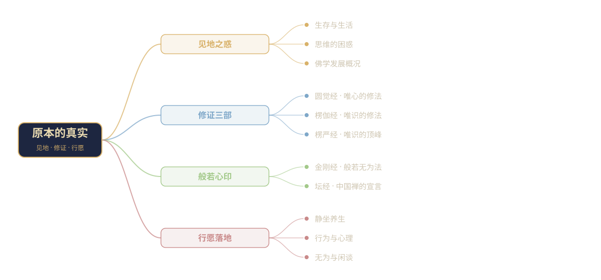

原本的真实
〇 · 书籍信息
基本信息
| 书名 | 《原本的真实》 |
|---|---|
| 作者 | 见君。自1966年起修学佛法三十年，自称此书为"文字禅、野狐禅"——不装高深，只讲亲身体会 |
| 出版 | 1997年6月第1版，370页 |
| 体裁 | 漫谈式佛法入门书。四个部分层层递进：先谈人生（为什么学）→ 再讲三部经（真常系的见地与修证）→ 再讲两部经（禅宗的无为法）→ 最后落到静坐实修与行为心理（怎么修） |
| 一句话 | 学佛法不是学佛学：知识是别人的，体验才是自己的；一切法门最终只指向一件事——让心灵从生存意志的奴役中解脱出来，做个大写的常人。 |
一 · 核心主题总览
全书虽分四部分，底层只讲了五组概念。抓住它们，三百多页就能压缩成一张纸：
① 生存意志 vs 心灵意志（全书的起点）
生存是物质的、动物性的，靠"好生恶死"与"占有"两个本能驱动，作者称之为生存意志——它制造永不满足的危机心态；生活是精神的存在，要求解脱、自由、知足，作者称之为心灵意志——它制造对幸福与安详的渴求。人的苦，就苦在两种意志的矛盾上。贫富、道德、苦行都解决不了这个矛盾，唯一的路是关心、观照自己的心。
② 见地 · 修证 · 行愿（佛法的三足鼎）
见地是认识论（为什么要修、世界是什么），修证是方法论（怎么修），行愿是目的与动力（为谁修）。三者缺一即是残废："见地不到，修也无益"；只谈见地不修证，是"只玩思想"；没有大悲大愿，修到深处必入魔境。
③ 三大体系：唯心 · 唯识 · 禅宗
唯心（圆觉经一路）：在感性认识区修止、观、禅那，理须顿悟、事须渐修；唯识（楞伽、楞严一路）：从意识区的"现识"入手，安住"自心现量"，一路向真识"左行"；禅宗（金刚经、坛经一路）：般若无为法，一句"照见、善护念"，在生活中直接见性。殊途同归，终点都是寂灭现前、明心见性。
④ 无为法与"忍"（修到深处的关键）
一切法门修到潜意识区，就"无一法可修"了——像坐上了上海到北京的火车，决定权已交给列车。此时唯一的功课是"无生法，忍"：不住、不下车、不半途贪恋沿途风光（五阴区宇的五十种境界即是五十个"站点"）。"有心求是妄想，无心求是感应。"
⑤ 一实三大（行为心理的底层引擎）
修行成败不在技巧，而在实信（真诚信）+ 大悲、大愿、大势。能不能、敢不敢、信不信，全是心理素质问题；紧箍咒、护法神、显宗的"密"，本质都是行为心理学的工具——灵的不是咒，是你对自身佛性的诚。这也是作者对一切"气功大师"迷信现象的釜底抽薪式批判。
二 · 第一部分 人生漫谈
先不谈怎么修，先谈清楚"人为什么苦、为什么要学"。这一部分是全书的地基，作者明说："般若不在这里，般若在人生漫谈之中。"
第一章 生存与生活
生存的真实
- 人活于世，先要生存（物质有机体的真实存在），其次才谈生活（高于生存、人类独有的身心存在）。
- 生存由两大本能支撑：好生恶死（安全）与占有物质（食、色、睡）。人类全部物质文明与精神文明，本质上是生存意志（贪欲）的成果——这不是贬义，是事实："食色性也"。
- 生存意志永不满足：吃惯窝头想馒头，吃惯饺子想满汉全席；六根（眼耳鼻舌身意）一旦接触"好的"，新的追求立即生出。松鼠藏松子远超所需，人与它相比并无高明。
生活的真实
- 人比动物高明之处：不只为生存，更须生活。心灵意志要求解脱、自由、无压力，长期被生存意志压制的心灵呈现扭曲状态——欲望满足后接踵而来的不是幸福，而是失落、乏味、无聊。
- 世人在三条路上寻找解决：第一条顺从生存意志去占有（富了就解脱？——"为富不仁"打杀所有富人）；第二条逆生存意志去苦行（辟谷、不倒单——释迦牟尼差点饿死才知此路不通）；第三条"中庸"的比上不足比下有余（"谁让你比了？用心去比，心态本身已经不对了"）。三条路都不究竟。
- 贫与富实在与心灵意志无关。唯一的路：关心！观心！
- 渔夫与老太太两个寓言点题："你说我现在正在干什么呢？"（捕鱼即安逸）；"都卖给你？那我下午卖什么？"（生活的意义在于"活"在人间，不在于挣到钱）。
- 心地解脱的人不是好逸恶劳，"一日不做，一日不食"；关键是"当责任压在心灵上"和"心灵理解这个责任"有天地之别——把工作和休闲打作两截的人心是变态的。真觉者"行、处、坐、卧不离这个"。
年龄与形而上
- 书中给出一个务实的建议：一般人在三十岁而立、生存意志中"永恒意志"悄然退场之后再学佛法，更容易安心（六祖式的慧根除外）。
第二章 思维的困惑
哲学的所能与不能
- 哲学与逻辑思维擅长处理"巨大而遥远"的问题，却无法处理活生生的人——"概念并不能垄断人生的全部，理性并不能霸占住人的全部感情。"
心理学的探索
- 作者借心理学提出人的精神活动分层：宇宙潜意识区→生物潜意识区→本体意识区（真识·现识·意识）→感性认识区→理性认识区。这个五区模型是全书的骨架，后面各经的修行路径全部以此为坐标。
- 纯理智无法解脱心灵，"用心去忘我"也没有效果——用心是外道，观心是真经。
释迦牟尼的道路
- 学佛要建立起一套"禅的思维方式"——不着两边、无所住，高于逻辑思维也高于艺术思维。学佛如学钢琴：边学边修，边修边学。
"佛法在世间，不离世间觉。"—— 六祖，作者在第一部分结尾反复引用
第三章 佛学发展概况
- 以一章的篇幅梳理佛教思想史：原始佛教与小乘（缘起性空）→ 大乘初期般若（龙树中观）→ 第一个大乘教派（中观）→ 第二个大乘教派（唯识）→ 晚期真常系（如来藏、佛性本净）→ 禅宗在中国的发展。
- 禅宗传承的关键节点：达摩以《楞伽》印心，"二入四行"，重行愿；四祖道信融《楞伽》与《般若》于一炉，戒禅合一、念佛与成佛合一，救禅宗于"太简难悟"之弊；五祖弘忍提出"教外别传、不立文字"，改以《金刚经》传心；六祖慧能"本来无一物"，反对看净观心，主张见地不到修也无益、悟后真修。
- 作者提醒：禅宗"不讲修证"是后世文人曲解——"只知某僧问师几句话，师一喝，僧开悟，你可知道那时的僧人不练个十年二十年的定法，根本没资格与祖师们讲禅机！"
三 · 第二部分 三部真常系的经典
《圆觉》《楞伽》《楞严》是真常系（唯识派中"看净、观心"）的三部代表作，作者称其为"凡学禅者必读之径，以《楞严》为最"。讲述原则：依经不依论，依法不依人；删繁就简，以经为主。
第一章 《圆觉经》—— 唯心的修法
- 十二位大菩萨与佛的问答，前四位（文殊、普贤、普眼、金刚藏）讲顿派，后八位讲渐派。顿渐不是两等人，是"一个人修行中的次序"：理须顿悟，事须渐修。
- 文殊之问引出纲领：清净心不是"发"出来的，是具有禅的思维后自然产生的——"不是息心除妄想，只缘无事可思量"。
- 普贤之问引出修法总纲："知幻即离，不作方便；离幻即觉，亦无渐次。"先否定理性、再否定感性、彻底否定五蕴；连"远离"本身也要远离，到没什么可离，即除诸幻。
- 普眼之问引出具体的止、观、禅那三法：止如死、观如生、禅那含摄二边——"止能得大势至，观能得大慈悲，禅那就见到阿弥陀佛了"（西方三圣之密）。
- 辨音之问引出二十五轮（单修止/观/禅那及其组合次序），法有多门，目的只有一个：训练禅的思维方式。
- 净诸业障之问（"本性清净，因何染污"）惹佛发了大勇猛——作者借此说明佛是活生生的人，有血有肉，中国禅风源于此。同时点出要害：修行人连"证得的清净涅槃"也是我相，不除我相，不能入清净觉。
- 普觉之问引出四病：作病（认为一切靠修）、任病（放任自流）、止病（求一念不起）、灭病（求一切永寂）——四种极端都是病。
第二章 《楞伽经》—— 唯识的修法
- 达摩带到中国的唯一一部经，五祖以前禅宗以之印心。唯识难懂，因为它是真正的唯识：在"本体意识区"（只有识、没有情）下手，文字天然难以表达，所以必须"以心传心"、必须有师傅。
- 三识体系：真识（如来藏、精真，宇宙的根本，人身中的"小碎片"，全息地含藏大宇宙的全部信息）→ 生现识（无心的含摄，"自心现量"）→ 生分别事识（有心的分别）。
- 修行即"左行"：从现识（自心现量状态——既清醒又什么都没想）往真识方向走；禅宗的棒喝、公案，全是让你止步右行、回头左行的手段。
- 成佛三阶段：初得无所有相（空果，偏空）→ 诸佛自愿处相（发大慈悲，偏有）→ 自觉圣智究竟相（成佛）。空果之后必须发大悲心，否则冷冷清清走不下去。
- 要点口诀："善分别自心现，善观外性非性，善离生住灭见。"修法简单得"没法再简单"：进入自心现量后只需"存在、就是这样"，一切杂念幻景来了不理、不问、不喜不怪。
第三章 《楞严经》—— 唯识的顶峰
缘起与七处征心
- 主角是阿难——多闻第一却无人生经验，一见摩登伽女差点破戒。作者借古讽今："当代知识分子，有知识有理论，又鬼又聪明，就是没智慧，没人生经验。"
- 七处征心：心不在身内、不在身外、不在中间……凡依缘才生的心都是妄心，无自性、没有家，"只要你执、住，它就以那个地方为家了"。
- 波斯匿王观恒河之喻：容颜已老，"能看恒河的那个能力"未变——肉身会坏，真性不坏。
- 八还辨见：光明还太阳、黑暗还夜色、通达还门户……一切现象都可归还本位，唯独那个能知能见的自性没法还——"诸可还者，自然非汝；不汝还者，非汝而谁？"
楞严的宇宙观
- 心物一元：物质与精神、存在与运动、身与心，都是自性的两个面。作者用"存在=物质，运动=力/意志/精神"来重新表述——精真（真识）如自然规律、如基本粒子，性空而能生妙有。
- 作者旗帜鲜明：把心与物、身与心分开对立来研究的理论"统统为邪见"；学佛贵在"艺术的禅的思维"——慈母手中线，你能从中看到母亲，那是禅的思维；认为"一针一线怎么可以等于我娘"者，是玩学问者。
二十五位圆通与五十阴魔
- 第二十五位观世音菩萨的耳根圆通是全书最细的实修讲解："初于闻中，入流亡所。所入既寂，动静二相，了然不生。如是渐增。闻所闻尽，尽闻不住……寂灭现前。忽然超越，世出世间，十方圆明，获二殊胜。"文殊总评为最快最稳之道："反闻闻自性。"
- 作者对耳根圆通给出极简读法：第一阶段只学"不加分别地听"；修证中的悟性就是"忍、耐、等"（无生法忍）；"觉所觉空、空所空灭"等中间过程是观音的亲身感受，不是课程表——"千万别下车去看风景"。
- 五十阴魔＝修行列车上的五个"中停站"（色、受、想、行、识五阴，每阴十种境界）：见光见佛、悲泪狂勇、贪求神通宿命、堕入无因论/遍常论/断灭论……本质都是潜意识深处的坚固妄想、虚明妄想、融通妄想、幽隐妄想抬头。破法只有一句：佛来佛斩，魔来魔斩，不住，不下车。作者借此把一切"特异功能大师"归位：他们的功夫"全不出五阴区"。
四 · 第三部分 两部禅宗的经典
自五祖以《金刚经》印心，禅宗从"如来禅"进入"祖师禅"——彻底摆脱唯识的空谈与争辩，抓住见地，统领修证与行愿，把佛法请回人间。
第一章 《金刚经》—— 般若无为法
- 第一品的白描是全书的"眼"：世尊着衣持钵、入城乞食、饭食讫、收衣钵、洗足已、敷座而坐——禅在世间，生活即禅，饿了吃饭、困了眠，平常心即道。五祖选此经印心，正因它保留了这份生活的神韵。
- 须菩提之问"云何应住、云何降伏其心"，佛的回答通篇归结为两个字：善护念——不喜不恨地照见念头，念头无根，自去；"我相、人相、众生相、寿者相"一着，即非菩萨。
- 前三十二品的两半结构是作者的重要发现：前十六品重见地（理论、可琢磨字句），后十六品重修证（须菩提重问一遍，讲的却是修持中的境界与注意事项——"同一部经讲了两遍，这是金刚经的大密"）。
- 关键句依次展开："凡所有相，皆是虚妄，若见诸相非相，即见如来"（体·相·用：法身为体、报身为相、化身为用）；"一切贤圣，皆以无为法而有差别"（法无定法，因人因时而异，一切经论皆是一家之言）；"应无所住，而生其心"（方法论与认识论合一——心不住法，法也不住心，"所谓佛法，即非佛法"）；"过去心不可得，现在心不可得，未来心不可得"（修到深处，种种境界、种种心全是幻上生幻，一照见即空）；"若以色见我，以音声求我，是人行邪道，不能见如来"（见光见佛仍是想阴造出来的）。
- 收尾四句是本经之眼："一切有为法，如梦幻泡影，如露亦如电，应作如是观。"龙树依般若建出世的中观（龙树境界），五祖六祖依般若建入世的禅（禅宗境界）——同一部经，出发点不同，境界不同。
- 附带《心经》：全文几百字讲一个"照见"——"照见五蕴皆空"，行到深处，无智亦无得，"以无所得故"。无为法的禅最易也最难，都在照见二字。
第二章 《坛经》—— 中国禅的宣言
先立根基：南派根器与北派根器
- 作者提出全书最有辨识度的分类：北派根器偏好修证，讲功夫津津乐道，宜修真常系（神秀是代表）；南派根器偏好见地与行愿，一听功法就烦，宜修般若（慧能是代表）。两派如"习武者有人天生是大侠，有人天生是将军"——根器无高下，论短长是毁法。"南顿北渐"是历史大误会：法本一宗，人有南北；法无顿渐，人有利钝。
自序品 · 传法大戏
- 六祖听客诵"应无所住而生其心"心即开悟；初见五祖即放胆直言："人虽有南北，佛性本无南北"——慧根在于敢，出手不可低。
- 神秀偈"身似菩提树，心如明镜台，时时勤拂拭，勿使惹尘埃"——北派根器的经典之作，作者为神秀正名："人家讲善护念，有什么不对！踏踏实实修到行阴区把真常一扔，亦是佛也。"六祖偈"本来无一物，何处惹尘埃"——南派见地。两偈各对其根器，不可拿来互相打杀。
- 五祖帐中讲《金刚经》至"应无所住而生其心"，六祖言下大悟："何期自性本自清净，本不生灭，本自具足，本无动摇，能生万法。""不识本心，学法无益。"
- 六祖第一次开示惠明："不思善，不思恶，正与么时，那个是明上座本来面目。"——般若"照见"的练功法：静下来，不思善恶之际，起心一照，正是这个。惠明再问还有没有更密的？六祖答："与汝说者，即非密也。汝若返照，密在汝边。"
- 猎人队中一十五载，是悟后真修。"但吃肉边菜"六字，作者为之动容并痛斥后人"酒肉穿肠过、佛祖心中留"的狂禅："亵渎的是一种理想、境界和人之品！受了的戒必守，大丈夫一言九鼎。"
- 风幡之辩"仁者心动"，一句语惊四座——般若讲心不动为主体、心动为客尘，出手比真常系的"风动幡动"高一个层次。
般若品 · 定慧品 · 妙行品
- 摩诃般若波罗密的真义：自性真空、能含万法为"摩诃"；念念无滞、去来自由为"般若"；离境无生灭为"波罗密"。"口念心不行，如幻如化；口念心行，则心口相应，本性是佛。"
- "凡夫即佛，烦恼即菩提。前念迷即凡夫，后念悟即佛；前念著境即烦恼，后念离境即菩提。"
- 功德正名：见性是功，平等是德；内心谦下是功，外行于礼是德——修桥造寺、布施供养皆不是功德的本体。净土正名："随其心净，即佛土净"；"但行十善，何须更愿往生"。
- 定慧一体：定是慧体，慧是定用，不是打坐入定才生慧的两截法。一行三昧：于一切行住坐卧常行一直心——直心不等于没心没肺，"有情是直心最有魅力的色彩"。
- 禅门总纲三句：无念为宗、无相为体、无住为本。无念不是"百物不思"（"一念绝即死"），是于诸境上心不染；无相是于相而离相；无住是念念不思前境。
- 坐禅正名："外于一切善恶境界，心念不起，名为坐；内见自性不动，名为禅。"禅定正名："外离相为禅，内不乱为定。"——禅宗的坐禅不必双盘、不必在寺，行住坐卧皆可。
忏悔品 · 机缘品 · 顿渐品 · 付嘱品
- 学佛入门三步曲：愿、忏、戒。真忏要敢于把过错讲给师傅——"不敢讲，是住在虚荣心的我上"；做了好事不愿讲反而对——"不言善，不避恶"。
- 机缘品诸公案一以贯之："诸佛妙理，非关文字"（无尽藏尼）；"成一切相即心，离一切相即佛"（法海）；佛的知见即"内外不迷"——"于相离相，于空离空"，人人自心即是佛之知见；三身四智一句话收束："清净法身，汝之性也；圆满报身，汝之智也；千百亿化身，汝之行也。"
- 神会（十三岁童子）两番耍嘴皮子被六祖点破："汝自性且不见，敢尔弄人""只成个知解宗徒"。作者的判语很妙：真开悟的语言生动、不连贯、不规范；假开悟的语言呆板、无生气、规范。
- 顿渐品总纲："法本一宗，人有南北；法即一种，见有迟疾。"北派讲止观禅、讲层次、讲三身四智；南派讲无住无生、讲直入、讲明心见性即可——"修禅宗的同仁，这些分别不可不知，否则失去了禅风，成了野狐禅。"
- 付嘱品传下"三科法门、三十六对"——禅门师傅的"秘密武器"：来者问黑说白、问白说黑，出没即离两边，让二法来去相因，逼到"二法尽除"处见性。作者妙笔：生活中的矛盾处处有"对法"——弟子说"人要活着必挣钱"，你说"活着只是为挣钱？"；弟子说"活着没劲要出家"，你说"佛法原本在世间"。
五 · 第四部分 静坐、行为与闲谈
全书最实操的部分。作者把静坐比作乐曲的序曲，行为心理是各乐章，无为闲谈是尾声。金句先立："不转色身，难识自心。"
第一章 静坐养生
- 动与静：有动才有静。"一日不做一日不食"是讲一定要出汗——每日微汗一次，有灵活性运动（体操）与负重性运动（举重）两类，"当成圆觉和楞严修"。不出汗的静坐练成"赖头修行者"。动中亦可悟道：简单重复的体力劳动是极好的道场，"不可以只认为静才入道"。
- 天台《小止观》六调：调饮食（不饱不饥）、调睡眠（以精力充沛为准，能睡亦是罗汉层次）、调身（松而不懈、挺而不僵）、调息（风、喘、气、息四相，以"息"为佳）、数息（一至十循环）、住静。
- 三个阶段：昏沉（多半缺觉疲劳）→ 妄念纷飞（正常现象，不怕不喜不除，只不理它）→ 幻想幻境（见光见佛是生理心理交感，连意生身都不是，"佛来佛斩"）→ 极静状态（守住这个，"静它个堂堂正正，静它个八面威风"）。四加行：暖、顶、忍、世第一法。
- 气与气脉：气、脉、周天都有，但那是生理自己的事——"凡练气走周天的，多半是意在走，而不是气"。唯一要诀："无为无我，一心住静"。腿麻、酸痛、阳举、八触、头部胀痛，全是身体在自我调整治病，"别怕，忍"，信任身体——"你的手划了口子谁治好的？还是你的身。这个人要当了皇帝也是个昏君，只信奸臣！"心法有个宝叫心性本来清净，身法也有个宝叫静——二者一回事，曰：佛性。百日筑基收束。
第二章 行为与心理
- 全章立在一根支柱上：一实三大——一为实信、诚信；三大为大悲、大愿、大势。修行的成败"源于你的一实三大"，高于一切功法技巧。
- 能不能：狗急跳墙、大车上撒尿、体操运动员赛前的深呼吸——能不能与技巧无关，与心理状态有关。惠能一樵夫成中国之佛，"乃真信、真想、真愿、真大势者"。
- 敢不敢：三十厘米独木桥，平地小孩敢走、山涧剑道大师不敢过——后有追兵就都敢过。学佛敢不敢"出手就高"？"看圆觉经，讲开悟只有前四位菩萨，这不是很明白地告诉诸位：见道容易修道难。要敢于见道，敢于肯定人人自具慧根。"
- 信不信：天大的问题。作者以"神汉治病""假大师带功报告"两个近乎社会学的案例拆穿：灵的不是大师，是你自身的佛性——"可怜人们，你们什么时候这么虔诚地信过自身？哪怕千分之一，你的病也早好啦。"圆觉经让抽签、须菩提问"生实信不"，全是怕你不信。
- 显宗的密：高推圣境（把法门讲得神乎其神，妙在你去的路上——张甲炼丹三十年，长生之密原来是三年如一日的静坐）、法不传六耳（附耳传的咒"灵"在于郑重与实信，印成百万册就只剩百万分之一）、诸路天神（摔跤手腰间的"圣经"——护法护的是你的自性）、庄严佛土（一个人唱国歌不算什么，升旗仪式才叫庄严——"一天持咒一遍和十万遍没区别，区别在于庄严佛土"）、紧箍咒（执、著就是金刚箍；"无所住，就无箍"）。
- 本章总结："一实三大不是学问，是行为与心理；不是功夫，高于功夫。开悟与她有缘，与法无缘。"
第三章 无为与闲谈
- 收尾章，无法无章法。以雪岩禅师（道钦）自述修道历程作结：二十年空坐成"死水"→ 参话头误入假疑 → 昏沉散乱如烂泥 → 想家请假"一放"反而十倍精神 → 终于在"无梦无想时主人公何处"这一问上卡了十年 → 一日见古柏而"碍膺之物扑然而散，如暗室中出在白日之下"——自此不疑生，不疑死，不疑佛，不疑祖。
- 道钦悟后语亦是全书的方法论自白："行得一里二里，只说得一里二里话；行得千里万里，方说得千里万里话。"
- 全书总结（二十余万字只剩以下几句，作者原话）：
三种法 唯心、唯识、禅宗 四种人 南北两根，顿渐两智 一条路 色身修入 → 修行与一实三大 → 无为见道 几种邪见 玩学问、乱推断、钻法门；太急、太缓 修行三要点 经常检察自己的出发点；经常检察自己的着眼点；经常检察自己的思维方式。 四种活法 依理性认识区生活的（冷冰冰，如科学家）；依感性认识区生活的（灼热，如艺术家）；依本体意识区生活的（圣人）；依真如自性生活的（佛）。——"身与心，哪个不是如真的自性？"
六 · 名段欣赏—— 原文精读 · 逐段赏析 ——
七 · 金句摘录—— 33 条 · 带出处 ——
"先以定动，后以智拔。……静与定，是为正确的思维而做的准备和基础，它是手段，不是目的。"—— 第一部分 · 静下心来
"人人都懂得要生存，但很少有人真正懂得生活。"—— 第一章 · 生存与生活
"生存，是生存意志的真实，由生存的本能决定的；生活，是心灵意志的原本的真实，由心灵的解脱而获得的。"—— 第一章 · 原本的真实
"贫与富实在与心灵的意志无关。……为什么不关心一下自己的心？关心！观心！只此一条路。"—— 第一章 · 第三条并不究竟的路
"把工作和休闲打作两截时，人心是变态的。真正的觉者，一切如如，一真一切真。"—— 第一章 · 人必须要过生活
"用心是外道，观心是真经。"—— 第一部分小结
"知幻即离，不作方便；离幻即觉，亦无渐次。"—— 《圆觉经》引文
"未出轮回而辩圆觉，彼圆觉性即同流转，若免轮回，无有是处！"—— 《圆觉经》引文（别在没修到时瞎猜）
"诸可还者，自然非汝；不汝还者，非汝而谁？"—— 《楞严经》八还辨见
"反闻闻自性。"—— 文殊评耳根圆通
"凡所有相，皆是虚妄；若见诸相非相，即见如来。"—— 《金刚经》第五品
"一切贤圣，皆以无为法而有差别。"—— 《金刚经》第七品
"应无所住，而生其心。"—— 《金刚经》第十品（六祖开悟句）
"过去心不可得，现在心不可得，未来心不可得。"—— 《金刚经》第十八品
"若以色见我，以音声求我，是人行邪道，不能见如来。"—— 《金刚经》第二十六品
"一切有为法，如梦幻泡影，如露亦如电，应作如是观。"—— 《金刚经》结语
"身似菩提树，心如明镜台，时时勤拂拭，勿使惹尘埃。"／"菩提本无树，明镜亦非台，本来无一物，何处惹尘埃。"—— 神秀偈 / 六祖偈（作者：两偈各对其根器，无高下）
"不思善，不思恶，正与么时，那个是明上座本来面目。"—— 六祖度惠明
"何期自性本自清净……本不生灭……本自具足……本无动摇……能生万法。"—— 六祖彻悟
"与汝说者，即非密也。汝若返照，密在汝边。"—— 六祖答惠明问密
"佛法在世间，不离世间觉；离世觅菩提，恰如求兔角。"—— 《坛经》般若品
"心平何劳持戒，行直何用修禅。"—— 《坛经》决疑品
"见性是功，平等是德。念念无滞，常见本性，真实妙用，名为功德。"—— 《坛经》决疑品
"前念迷即凡夫，后念悟即佛；前念著境即烦恼，后念离境即菩提。"—— 《坛经》般若品
"无念为宗，无相为体，无住为本。"—— 《坛经》定慧品（禅宗总纲）
"外离相为禅，内不乱为定。"—— 《坛经》妙行品
"清净法身，汝之性也；圆满报身，汝之智也；千百亿化身，汝之行也。"—— 六祖答智通（三身归于自身）
"身安则道隆。"—— 第四部分 · 调饮食
"无为无我，一心住静。"—— 第四部分 · 静坐要诀（作者的"各位要紧的咒语"）
"有心求是妄想，无心求是感应。"—— 第三、四部分反复出现
"知一切法无我，得成于忍。"—— 《金刚经》第二十八品（黎明前的黑暗）
"行一里路说一里话，行千里路说千里话。"—— 全书的诚实底线（序言与结尾两见）
"净化自心以达热爱众生、热爱现实生活！"—— 后记：全书真正的一句话总结
八 · 拓展阅读—— 佐证与延伸 · 外部资源 ——
核心观点不止于本书自证。以下外部资源按「原典 → 词典 → 延伸」三组排列，点开即可进一步佐证与延展阅读。
九 · 个人感悟与心得
读罢合卷，四点心得
其一，这本书治好了"知识囤积"的病。见君反复敲打"佛学 ≠ 佛法"：佛学是知识，佛法是体验，"多好的教本，你不去练，有什么用"。这跟做精算的人最熟的痛点一模一样——指标体系读了一百篇，报告写不出来；课程收藏了三百个，能力没长一寸。收藏即学会，是生存意志给自己找的安慰剂。书里那句"行一里路说一里话"，值得我们抄下来贴在工位上：只输出自己真正走过的那一里路，剩下的老老实实承认没走到。
其二，"见地、修证、行愿"三足鼎，就是个人成长的完整闭环。见地是想明白为什么（认知层），修证是一天天练（执行层），行愿是知道为谁而做（动力层）。大多数人卡住的地方，恰是作者诊断的断点：只囤见地，不做修证，行愿更是没想过。反过来，只埋头修证没有见地，"见地不到，修也无益"，练得越狠偏得越远。做产品、做知识库、带团队，都是这个结构——先想清楚"为什么"，再谈"怎么做"，用"为谁"提供源源不断的势。
其三，"生存意志与心灵意志"的矛盾，是每一个在职者都要直面的资产负债表。生存意志管"占有与安全"，永远给你新的KPI、新的焦虑；心灵意志要"解脱与知足"，长期被压制就会以无聊、失落、倦怠的形式向你讨债。三条歧路——拼了命地赚、一刀切地断、"比上不足比下有余"地熬——书里逐一驳过。真正的解法朴素得惊人：把工作和休息打成两截的心才是变态的，解脱者"幸福存在于整个生活之中"。对我们而言，不是辞职去修行，而是把手头的事本身过成生活：写一篇材料时全然地写，陪家人时全然地陪，"行、处、坐、卧不离这个"。
其四，"一实三大"值得当作职业信条。实信——真的相信自己做的东西有价值，不因一时没反馈就散架；大悲——心里装着服务的人（客户、读者、家人），不是装着自己的委屈；大愿与大势——把目标放到足够大，势能才够冲破障碍，"小溪遇障碍只能绕行，高峡水库一旦决堤什么也挡不住"。所谓心理素质，从来不是天赋，是这四样东西的乘积。而"显宗的密"那一章提醒我们：真正灵的从来不是咒语和形式，是你对自己的诚——想清楚了再签字，签了字就认真，认了真就忍得住。
一句话收束：这本书两百多个"漫谈"，其实只讲了一件事——原本的真实不在远方，就在你每天谋生、陪护、写材料、赶报告的那个当下；净化自心，是为了热爱众生、热爱现实生活。学什么都不神秘，怕的是把它学成学问、学成表演、学成迷信。慢慢修，老实修，忍得住，等得起——这既是修行，也是复利。
十 · 一页速查（复习用）
| 全书框架 | ①人生漫谈（为什么学）→ ②三部真常系经典（唯心唯识怎么修）→ ③两部禅宗经典（无为法怎么见性）→ ④静坐·行为·闲谈（实修落地） |
|---|---|
| 三个概念 | 佛教（组织）／佛法（方法：见地·修证·行愿）／佛学（哲学研究）——本书只讲佛法 |
| 两种意志 | 生存意志（占有·危机心态）vs 心灵意志（知足·解脱）——矛盾只能由"观心"解决 |
| 三大体系 | 唯心（圆觉：止观禅那）／唯识（楞伽·楞严：自心现量、左行）／禅宗（金刚·坛经：照见·善护念·无住） |
| 根器两派 | 北派重修证（神秀），南派重见地行愿（慧能）——无高下，"法无顿渐，人有利钝" |
| 修心次序 | 愿 → 忏 → 戒；理须顿悟，事须渐修；悟后真修 |
| 深处关键 | 无生法·忍：不住、不下车（五十阴魔是五十个站，不是目的地） |
| 行为心理 | 一实三大 = 实信 + 大悲·大愿·大势；能不能/敢不敢/信不信全是心理问题 |
| 静坐要诀 | 有动才有静；每日微汗；调饮食睡眠身息；"无为无我，一心住静"；不转色身，难识自心 |
| 防坑清单 | 玩学问／乱推断／钻法门／太急太缓；神通功能是五阴区的小术；四病：作、任、止、灭；我相不除不能入清净觉 |
| 一句话总结 | 净化自心，以达热爱众生、热爱现实生活。 |
十一 · 全书思维导图—— 一图纵览 ——

一图纵览全书骨架 · 手机端可左右滑动查看全图